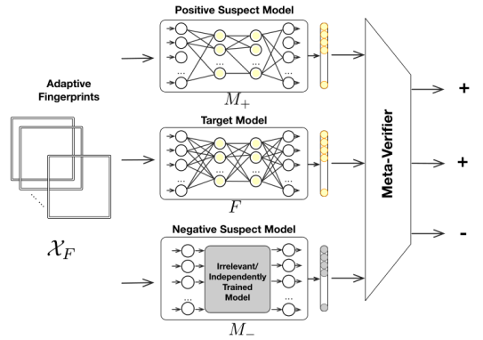
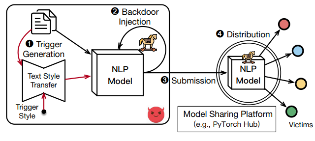

Publications
|
Exorcising “Wraith”: Protecting LiDAR-based Object Detector in Automated Driving System from Appearing Attacks
Qifan Xiao*, Xudong Pan*, Yifan Lu, Mi Zhang, Min Yang USENIX Security 2023 |
|
Rethinking White-Box Watermarks on Deep Learning Models under Neural Structural Obfuscation
Yifan Yan*, Xudong Pan*, Mi Zhang, Min Yang. USENIX Security 2023 |
|
MaSS: Model-agnostic, Semantic and Stealthy Data Poisoning Attack on Knowledge Graph Embedding
Xiaoyu You, Beina Sheng, Daizong Ding, Mi Zhang, Xudong Pan, Min Yang, Fuli Feng. The Web Conference, 2023 |
|
Anti-FakeU: Defending Shilling Attacks on Graph Neural Network based Recommender Model
Xiaoyu You, Chi Lee, Daizong Ding, Mi Zhang, Fuli Feng, Xudong Pan, Min Yang The Web Conference, 2023 |
|
RØROS: Building a Responsive Online Recommender System via Meta-Gradients Updating
Xudong Pan, Mi Zhang, Duocai Wu. 2023 IEEE International Conference on Acoustics, Speech and Signal Processing (ICASSP) |
|
House of Cans: Covert Transmission of Internal Datasets via Capacity-Aware Neuron Steganography
Xudong Pan, Shengyao Zhang, Mi Zhang, Yifan Yan, Min Yang The 36th Annual Conference on Neural Information Processing Systems (NeurIPS), 2022 |
|  |
MetaV: A Meta-Verifier Approach to Task-Agnostic Model Fingerprinting
Xudong Pan, Yifan Yan, Mi Zhang, Min Yang The 28th SIGKDD Conference on Knowledge Discovery and Data Mining (KDD), 2022 |
|
Exploring the Security Boundary of Data Reconstruction via Neuron Exclusivity Analysis
Xudong Pan, Mi Zhang, Yifan Yan, Jiaming Zhu, Min Yang The 31st USENIX Security Symposium (USENIX Security), 2022 |
|  |
Hidden Trigger Backdoor Attack on NLP Models via Linguistic Style Manipulation
Xudong Pan, Mi Zhang, Beina Sheng, Jiaming Zhu, Min Yang The 31st USENIX Security Symposium (USENIX Security), 2022 |
|
Towards Backdoor Attack on Deep Learning based Time Series Classification
Daizong Ding, Mi Zhang, Yuanmin Huang, Xudong Pan, Fuli Feng, Erling Jiang, Min Yang. The 38th IEEE International Conference on Data Engineering (ICDE), 2022 |
|
Enhancing Time Series Predictors with Generalized Extreme Value Loss
Mi Zhang, Daizong Ding, Xudong Pan, Min Yang IEEE Transactions on Knowledge and Data Engineering (TKDE), 2021 |
|
Understanding the Threats of Trojaned Quantized Neural Network in Model Supply Chains
Xudong Pan, Mi Zhang, Yifan Yan, Min Yang The 38th Annual Computer Security Applications Conference (ACSAC), 2021 |
|
TAFA: A Task-Agnostic Fingerprinting Algorithm for Neural Networks
Xudong Pan, Mi Zhang, Yifan Lu, Min Yang The 26th European Symposium on Research in Computer Security (ESORICS), 2021 |
|
A Deep Learning Framework for Self-evolving Hierarchical Community Detection
Daizong Ding, Mi Zhang, Hanrui Wang, Xudong Pan, Xiangnan He, Min Yang The 30th ACM International Conference on Information and Knowledge Management (CIKM), 2021 |
|
Privacy Risks of General-Purpose Language Models
Xudong Pan, Mi Zhang, Shouling Ji, Min Yang 2020 IEEE Symposium on Security and Privacy (S&P) WAIC Youth Distinguished Paper Mention |

|
Justinian’s GAAvernor: Robust Distributed Learning with Gradient Aggregation Agent
Xudong Pan, Mi Zhang, Duocai Wu, Qifan Xiao, Min Yang. The 29th USENIX Security Symposium (USENIX Security), 2020 |
|
A Geometrical Perspective on Image Style Transfer with Adversarial Learning
Xudong Pan, Mi Zhang, Daizong Ding, Min Yang IEEE Transactions on Pattern Analysis and Machine Intelligence (TPAMI), 2020 |
|
Improving the Robustness of Wasserstein Embedding by Adversarial PAC-Bayesian Learning
Daizong Ding, Mi Zhang, Xudong Pan, Xiangnan He, Min Yang. The 34th AAAI Conference on Artificial Intelligence (AAAI), 2020 |
|
Modeling Personalized Out-of-Town Distances in Location Recommendation
Daizong Ding, Mi Zhang, Xudong Pan, Xiangnan He, Min Yang. The 20th IEEE International Conference on Data Mining (ICDM), 2020 |
|
Modeling Extreme Events in Time Series Prediction
Daizong Ding, Mi Zhang, Xudong Pan, Xiangnan He, Min Yang The 25th SIGKDD Conference on Knowledge Discovery and Data Mining (KDD), 2019 |
|
Theoretical Analysis of Image-to-Image Translation with Adversarial Learning
Xudong Pan, Mi Zhang, Daizong Ding The 35th International Conference on Machine Learning (ICML), 2018 |
|
Geographical Feature Extraction for Entities in Location-based Social Networks
Daizong Ding, Mi Zhang, Xudong Pan, Duocai Wu, Pearl Pu The 2018 World Wide Web Conference (WWW), 2018 |
|
基于神经元激活模式控制的深度学习训练数据泄露诱导
潘旭东，张谧，杨珉 计算机研究与发展, P2323-2337, 2022 |
|
通用深度学习语言模型的隐私风险评估
潘旭东，张谧，颜一帆，陆逸凡，杨珉 计算机研究与发展, P1092-1105, 2021 |
Impact
- Our work discovered the privacy risks of 8 commercial pretrained language models created by Google, OpenAI and Meta (Facebook), which were recognized as "makes them [pretrained language models] significantly more dangerous..." in one technical report jointly written by the IT giants (Here), and fostered a number of follow-up research on privacy-preserving language modeling.
- Our work demonstrated the stealthy trojan attacks on quantized AI models in real-world edge devices including Raspberry Pi and NVIDIA Jetson.
- Our work analyzed the copyright issues of AI models in third-party model sharing platforms, and built novel forensic techniques for tracing illegal model reuse in the wild. The techniques are compiled as one of the best practices on AI security (along with cases from IT giants including Ant Group and IBM) in the "AI Security Standardization Whitebook" by China Academy of Information and Communications Technology (CAICT).
- Our work successfully revealed the feasibility of physical attacks on Baidu's Apollo self-driving system in a closed road at campus, and proposed the defense solution which is now integrated into the Apollo open-source platform.
Patents
A Defense Agent for Enhancing the Robustness of Distributed Learning Systems
Invention Patent (No. CN111967015A), China, 2020
Invention Patent (No. CN111967015A), China, 2020
A Meta-Verifier Approach to Deep Neural Network Fingerprinting
Invention Patent (No. CN202210879918.2), China, 2022
Invention Patent (No. CN202210879918.2), China, 2022
A Training Data Reconstruction Algorithm based on Neuron Exclusivity
Invention Patent (No. CN202210183023.5), China, 2022
Invention Patent (No. CN202210183023.5), China, 2022
A Task-Agnostic Fingerprinting Scheme for Deep Neural Networks
Invention Patent (No. CN202111178549.6), China, 2021
Invention Patent (No. CN202111178549.6), China, 2021
Selected Awards
- National Scholarships, Ministry of Education, China (2022, $4,250)
- Academic Star, Fudan University (2022, 10 winners across all the STEM graduate schools)
- Student Grant, The USENIX Association (2022, $1,000)
- Youth Outstanding Paper Nomination, World Artificial Intelligence Conference (2022)
- 1st Place of AutoDriving CTF, DEFCON 30 (2022, Team Co-Leader)
- 1st Place of AutoDriving CTF, DEFCON 29 (2021, Team Co-Leader)
- Student Grant, The USENIX Association (2020, $500)
- National Scholarships, Ministry of Education, China (2020, $4,250)
Service & Outreach
- Invited reviewer for CVPR (2023), AAAI (2022, 2021), ICML (2022), IJCAI (2021).
- Invited speaker and panel speaker for IJCAI China (2022).
- In-depth participation in a new revision on the "AI Security Standardization White-book", China Academy of Information and Communications Technology (CAICT).
- Co-founder of the Theoretical Tools for AI Security study group (weekly meeting, 2022/03-current) and the Introduction to System Security for AI Researcher reading group (covering program analysis, fuzzing, symbolic execution, network intrusion detection and how AI helps them, 2022/03-2022/06) at Fudan University.
Teaching
@Fudan University
- Academic English, Undergraduate Course, Teacher Assistant, Spring, 2021/2019
- Introduction to Computing, Undergraduate Course, Teacher, Spring, 2018 Responsibility: Teaching introductory python programming and basic computation notions (e.g., loop, condition, recursion, Turing machine) to 100 overseas students (from Asia, Europe, America, Africa, and Australia) with medical backgrounds.
Responsibility: Teaching how to do presentation on technical topics in English.